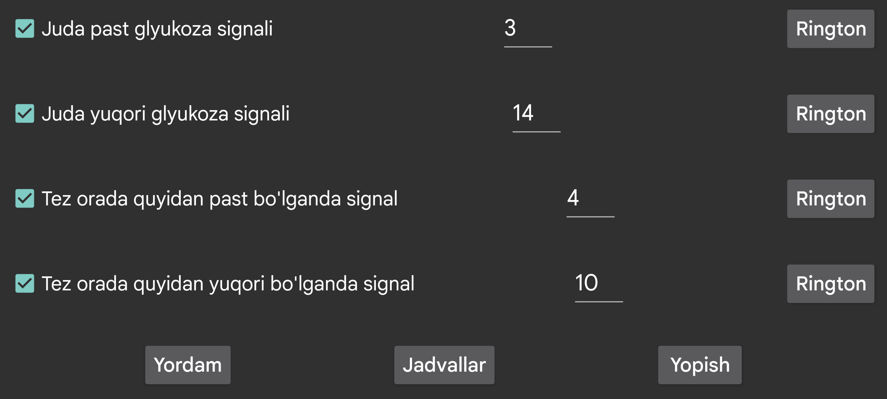

ar de es hi it ja nl ru uk uz en
Glyukoza qiymati past glyukoza signalidan ham past bo'lganda chalinadigan ikkinchi past signal.
Glyukoza qiymati yuqori glyukoza signalidan ham yuqori bo'lganda chalinadigan ikkinchi yuqori signal.
Glyukoza pasayganda qiymat tez orada belgilangan qiymatdan past bo'lishi kutilsa signal beradi.
Glyukoza ko'tarilganda qiymat tez orada belgilangan qiymatdan yuqori bo'lishi kutilsa signal beradi.
Ma'lum bir profil kunning ma'lum vaqtida faollashishi uchun jadval tuzing. Shu yo'l bilan kunduz va tun uchun boshqa glyukoza chegaralari yoki qo‘ng‘iroq ohanglaridan foydalanishingiz yoki tunda glyukoza qiymatlarini ovoz chiqarib aytishni avtomatik o'chirishingiz mumkin.